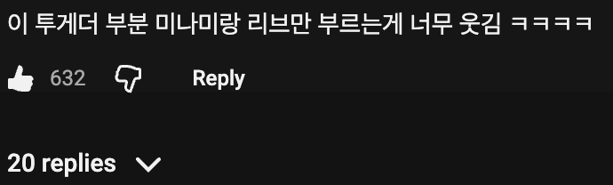
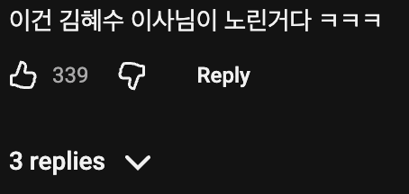
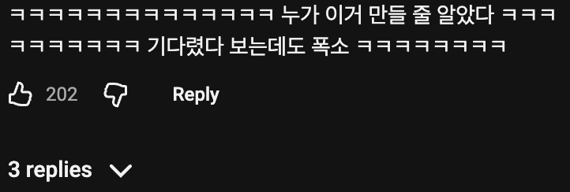
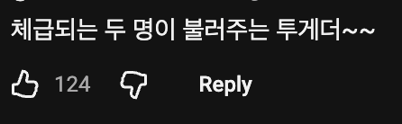
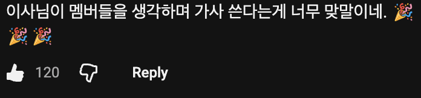

? : 운동 마지막 두개 더 하자
약과는요?
네, 맞습니다. 빙그레 투게더를 놓쳤습니다. 이름이 가사 단어와 그대로 겹쳐서 제 목록의 어떤 브랜드보다 연결이 강합니다.
- 이름이 두 번 맞습니다: 가사의 "together"가 브랜드 이름 그대로입니다. 곡 제목 「With」도 뜻이 "함께"라서, 제목과 가사 모두 투게더로 이어집니다.
- 브랜드가 하려는 말과 곡의 메시지가 같습니다: 투게더는 큰 통 하나를 둘러앉아 같이 떠먹는 "함께 나누는" 아이스크림으로 알려져 있습니다. 곡의 핵심도 응원해 준 사람들과 같이 앞으로 가자는 약속이라, 다섯 멤버나 팬과 한 통을 나눠 먹는 장면이 바로 그려집니다.
- "온기"는 아이스크림과 반대라서 오히려 좋습니다: 차가운 아이스크림을 함께 먹으며 마음이 따뜻해진다는 대비를 만들 수 있습니다. 가사의 "온기", 앨범 콘셉트인 체온 같은 머스크 향과도 이어집니다.
- 쓸 만한 문구: 후렴의 "nobody else but you"를 비틀면 "투게더 아니면 안 돼" 같은 짧은 카피도 바로 나옵니다.
이렇게 나오면 빙그레 백퍼 클로드 돌린거임.
?

하다하다 AI로 자아비대해지는 병신도 나오네

쟤네 뭐 방송에서 먹으면 홀린듯 배가 고파짐
야 투게더 니네 이제 뜬거야
지금 얼마나 먹고 싶을까
얘네 투게더에 약과 찍어먹는다는거 보고 진짜 먹는거 좋아하는구나 싶더라ㅋㅋ
지금스케줄엔 맘껏먹어도 안찌겠다
점차 빠들이 까를 만드는 단계로 접어드는거 같다
놀랍게도 리센느 뜨기 시작했을 때부터 이말 나왔음 ㅋㅋㅋ
나이 먹은 아저씨 팬들이 기존 아이돌 팬 성질 건드린단 식으로,
개드립에도 빠가 까 만든다는 식으로 글도 올라옴
약과 광고 들어와라